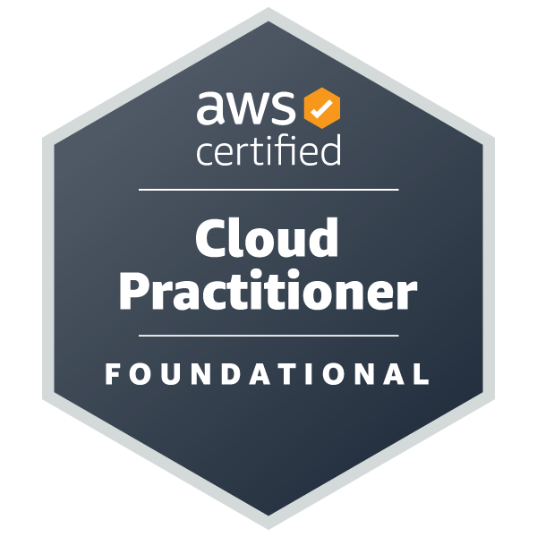 Valid till: Apr 18, 2029 |
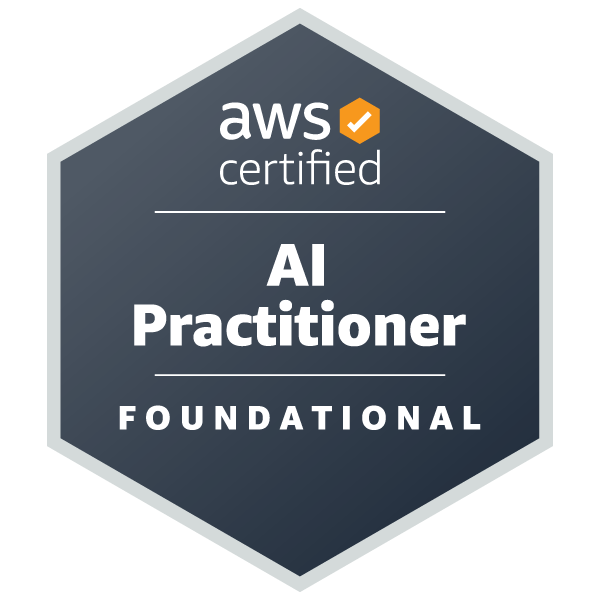 Valid till: Jun 14, 2028 |
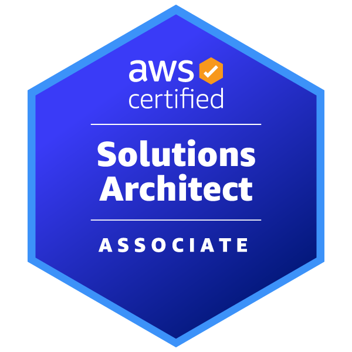 Valid till: May 31, 2028 |
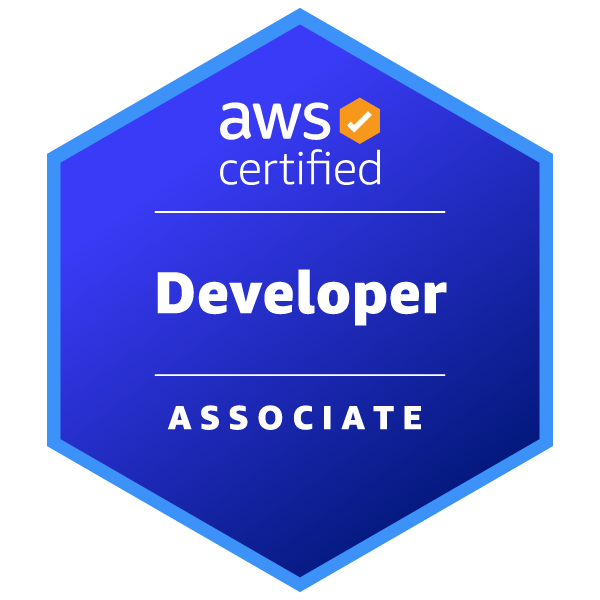 Valid till: Aug 16, 2028 |
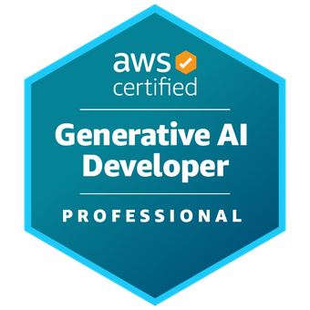 Preparing |
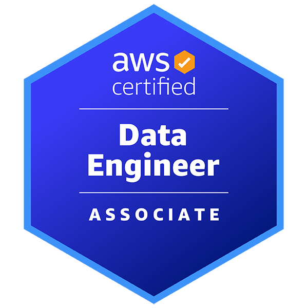 Valid till: Dec 20, 2027 |
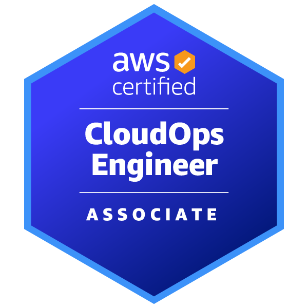 Valid till: Apr 18, 2029 |
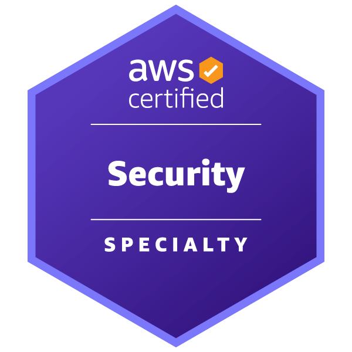 Valid till: Jul 25, 2029 |
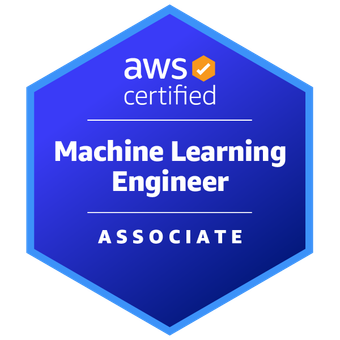 Preparing |
 Preparing |
Valid till: Dec 20, 2028 |
Valid till: 2026-07-29 |
Issued: Dec 18, 2021 | No Expiry |
Valid till: May 28, 2028 |
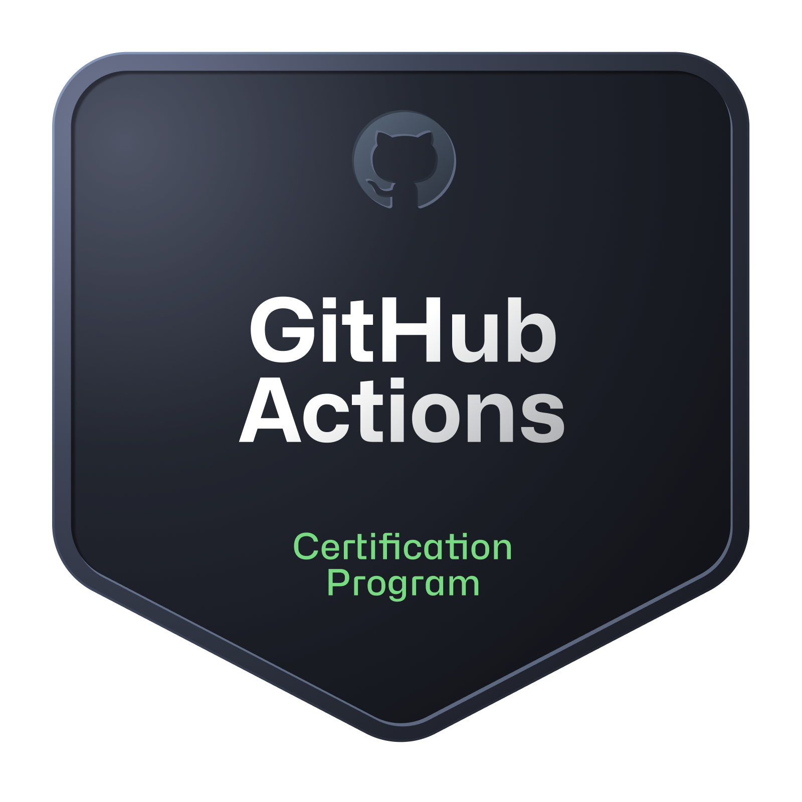 Valid till: Jun 28, 2028 |
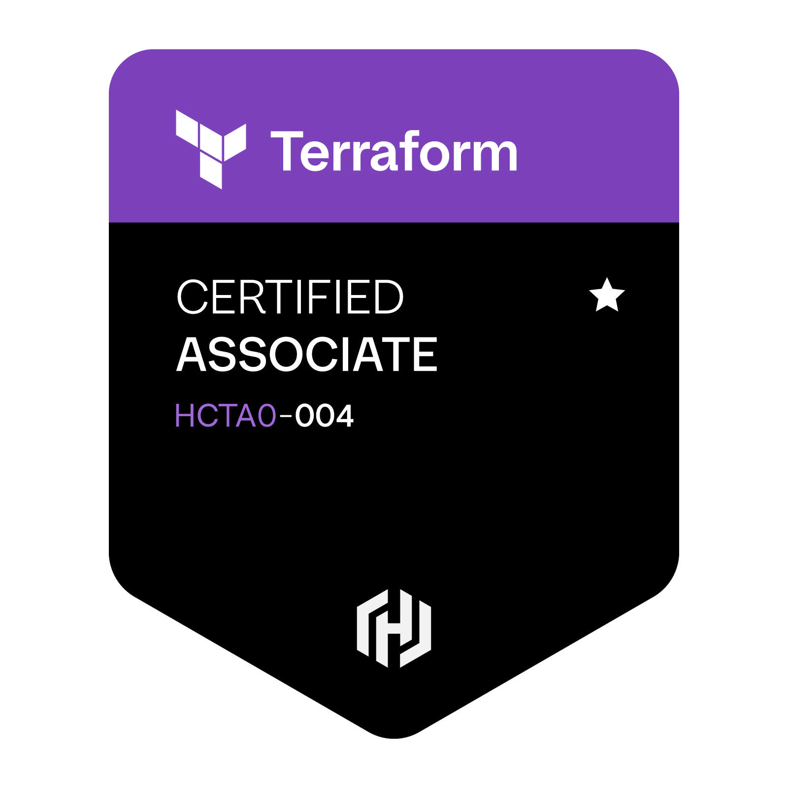 Valid till: Apr 1, 2028 |
Valid till: 2028-10-21 |
Valid till: 2028-10-16 |
Valid till: 2028-09-26 |
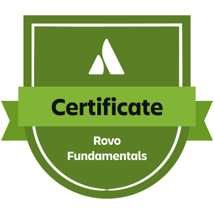 Valid till: 2027-07-24 |
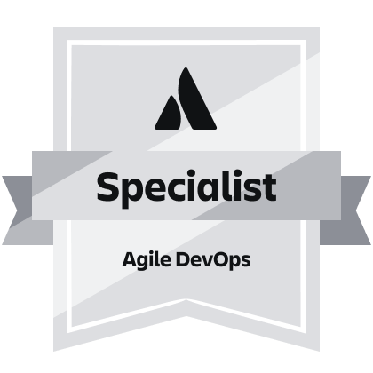 Valid till: 2027-07-24 |
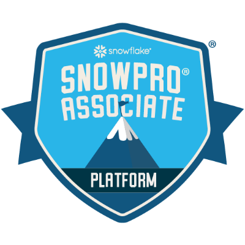 Valid till: March 13, 2028 |
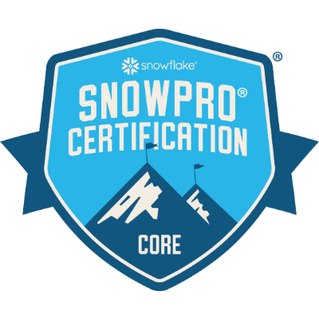 Valid till: June 13, 2028 |
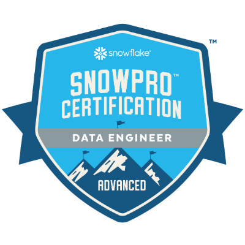 Valid till: June 13, 2028 |
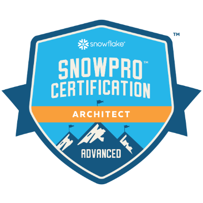 Valid till: June 13, 2028 |
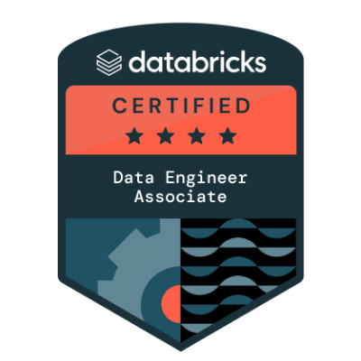 Valid till: January 31, 2028 |
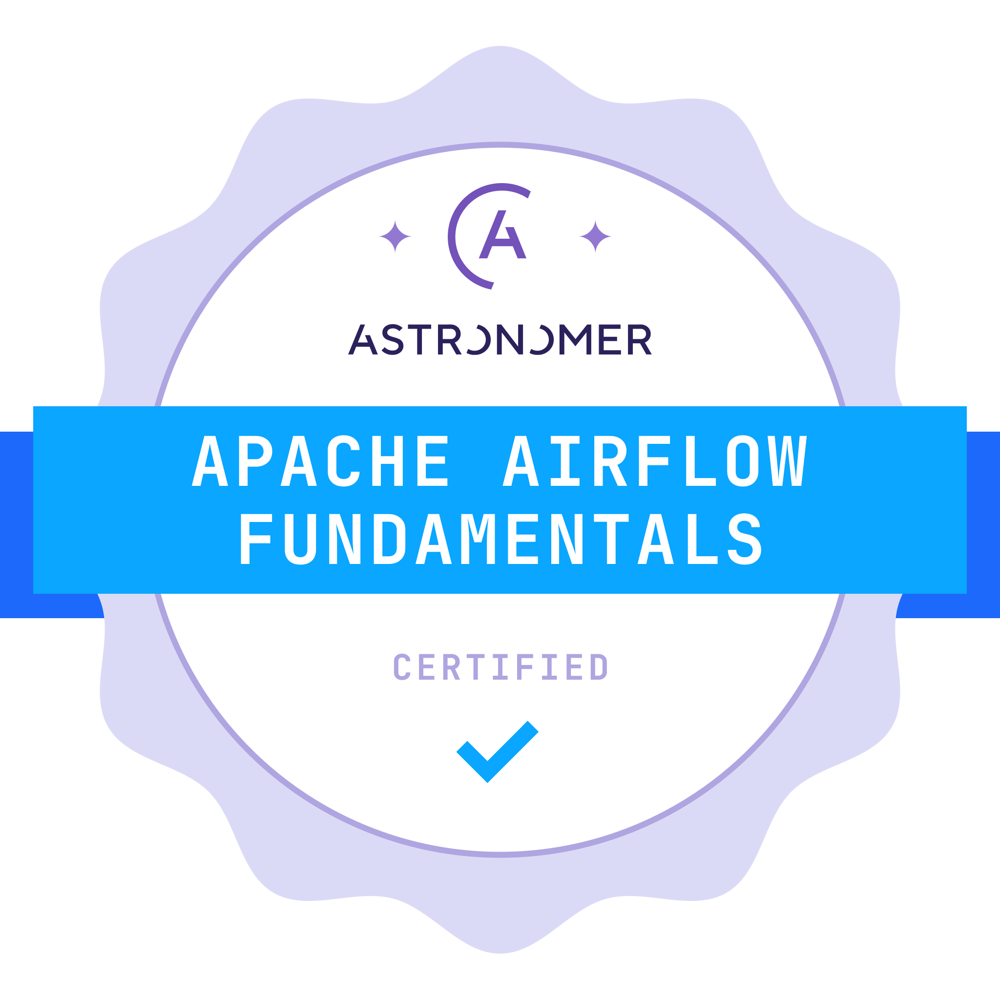 Issued: Nov 10, 2025 | No Expiry |
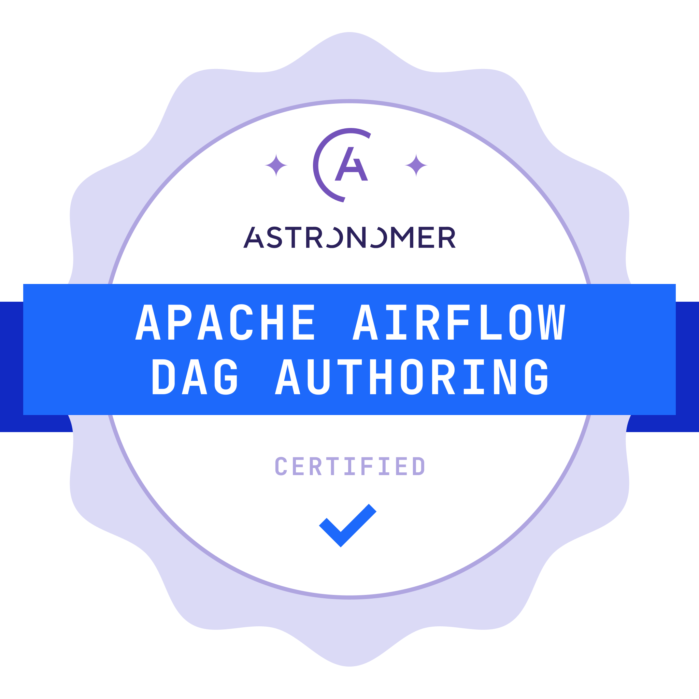 Issued: Nov 16, 2025 | No Expiry |
 Issued: Nov 16, 2025 | No Expiry |
Issued: Nov 16, 2025 | No Expiry |
Issued: Nov 16, 2025 | No Expiry |